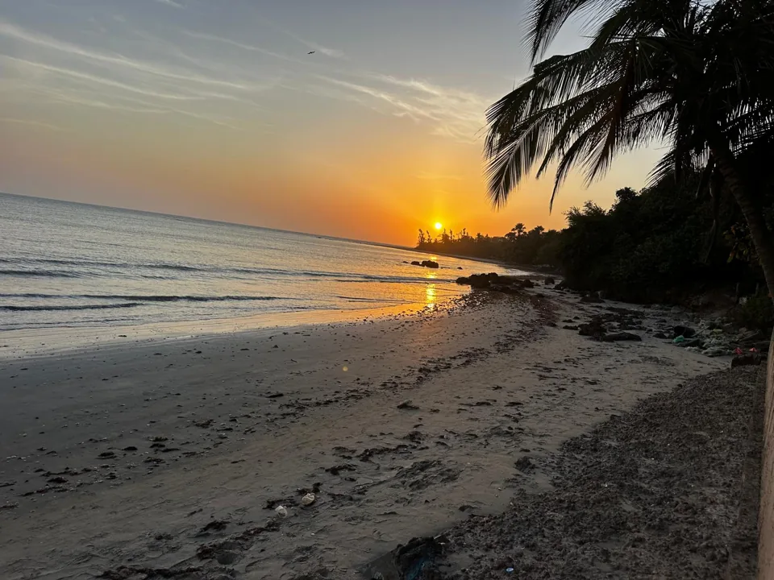
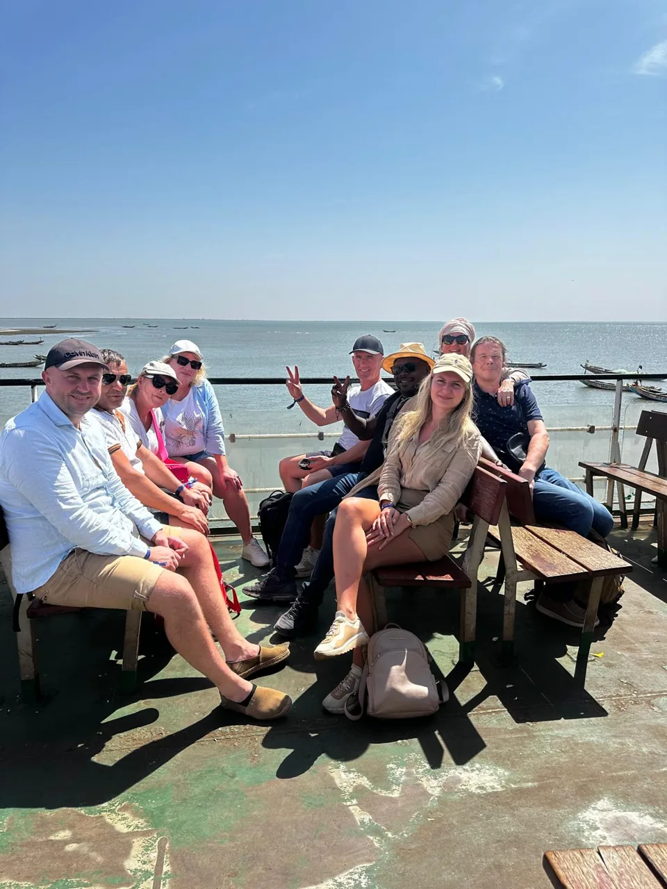

The Gambia 2026–2027: bookings are open.
When the season starts, how to choose your excursions and why a day beyond the beach belongs in your plans.
Read the season guide →Travel well. Get a little closer.
Seasonal ideas, practical planning and a local perspective on The Gambia and Senegal.

When the season starts, how to choose your excursions and why a day beyond the beach belongs in your plans.
Read the season guide →
Route inspiration
Find an excursion that fits your curiosity, your pace and the time you have.
Explore our travel stories →